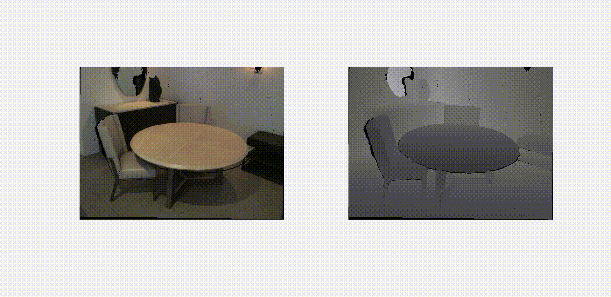
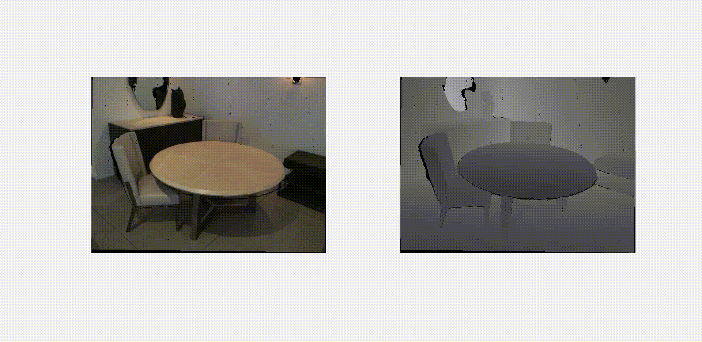

Khalil Virji
COMP 558 - Fundamentals of Computer Vision
-
This was a Computer Vision course that I took during my fifth year at McGill. Some of the topics we covered are listed below.
-
Image Filtering - local averaging, local difference, gaussian smoothing, convolution,
cross correlation, image gradient
-
Edge Detection - Prewitt and Sobel edge detectors, Marr & Hildreth edge detector,
Canny edge detector
-
Vanishing Point Detection - Hough transform, RANSAC (random sample consensus)
-
Scale Space - (normalized) gaussian (derivative, second derivative) scale space,
gaussian pyramid, Lucas-Kanade image registration
-
Feature Detection - locally distinctive points, second moment matrix, Harris corner
detector, HOG (Histogram of Oriented Gradients) descriptors, SIFT keypoints, SURF keypoints,
panoramas
-
Image Registration - optical flow, KLT tracking, medical imaging
-
Perspective - image projection, camera vs world coordinates, vanishing points
-
Rotations, Translations and Reflections - 2D/3D camera rotations, reflections, and
translations, homogeneous coordinates, points at infinity
-
Camera Intrinsics and Extrinsics - camera vs world coordinate systems, camera
calibration matrix, finite projective camera model (P)
-
Camera Calibration - finding camera intrinsic and extrinsic parameters from
corresponding pairs of image and 3D scene points
-
Homographies - fitting homographies between two images, applications
-
Stereo and Epipolar Geometry - epipoles, epipolar lines, essential matrix, fundamental
matrix, image rectification, 8 point algorithm, disparity estimation, RGBD cameras
-
3D reconstruction - iterative closest points algorithm (ICP)
- We also had four assignments throughout the course.
-
Edge detection using oriented operators - implemented our own edge detector using
techniques seen in class. Results from my submission are shown below (left is original
image).
-
Line finding using RANSAC - implemented the RANSAC algorithm to detect prominent lines in
an image. Results from my submission are shown below.
-
Lucas-Kanade Image Registration - estimate motion fields given a sequence of images. Results of my submission are shown below.
-
Rotations and Translations - given an rgb image, a depth map, and the intrinsic parameters of a camera, simulate rotations and translations. Results from my submission are shown below.
-
Stereo - given stereo pairs, estimate the fundamental matrix, rectify the images, and estimate the relative depth of objects in the scene. Results from my submission are shown below. The first row contains the original images with their epipolar lines. The second row contains the rectified images with their epipolar lines. The third row contains the relative depth of some objects in the scene.


 
